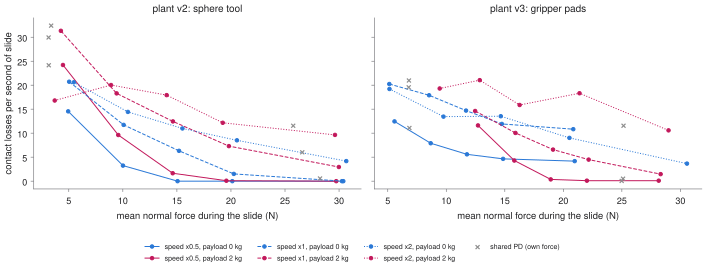

Milestone 9 moves the work to the robot the task-level evaluation should target: the DROID robot, a Franka Panda with a Robotiq 2F-85. This report establishes the new plant and protocol v3, and sets the baselines against which the retrained controllers will be read. Three questions: does the sphere plant's light-contact detachment persist on fingertip pads; what do the re-tuned PD, the feedforward PD and the privileged oracle score on the v3 families, the compliant surfaces and the two task families; and do the controllers trained on the sphere plant transfer to the gripper.
Plant v3 (ADR 0009). The Menagerie 2F-85 is settled at a commanded opening in a standalone simulation and baked, with every geom at its settled pose and the merged inertia (1.053 kg at the flange, closed), into one rigid tool body on the Panda flange; the controlled system stays at seven DoF. The tool point is the centre of the two fingertip end faces, the four pad boxes are the tool geoms with the contact model of the sphere tool (the Menagerie pad parameters gave 400 to 1600 N impacts), every other gripper geom is a robot link. The gripper is not controlled: closed for the surface families and for pushing, open to 38 mm for pick-and-place.
Protocol v3. The v2 families, splits and held-out groups with: press depths of 0.4 to 1.4 cm (7 to 12 N under 5 N + 500 N/m x depth) and a press floor of 7 N; the blocked composite with the release reaction (time after release until the tool moves toward the reference faster than 2 cm/s) and the release settling (time after the reference reaches its final waypoint until the error is below 1 cm) in place of the recovery; link clearance for every surface family by signed distance with the lift correction (2 mm of real clearance); table tilt 0 to 10 degrees and wall tilt 0 to 15 degrees. The shared PD gains are re-tuned on v3 by the Milestone 1 procedure. Two task families: box pushing (a 5 cm, 0.2 kg box pushed 10 cm with the fingertip faces, the tool axis 25 or 40 degrees below horizontal) and pick-and-place (a 34 mm, 0.3 kg block held by a weld, carried, placed 2 mm into the table, released 0.2 s into the dwell, lifted). Nothing from protocol v2 is compared with these numbers.
The plant finding of report 13 revisited on the gripper. Constant-force presses by the oracle law around the shared PD; the loss count is the protocol's (gaps of 5 ms or more).

Box pushing and pick-and-place with a held block (16 test cases each); the shared PD and the privileged oracle set the first marks.
| Controller | Push success (%) | Push error (cm) | Lateral (cm) | Yaw (deg) | Force on the box, 20 ms peak (N) | Place success (%) | Place error (cm) | Tilt (deg) | Block-table force, 20 ms peak (N) | Lift tracking RMSE (mrad) |
|---|---|---|---|---|---|---|---|---|---|---|
| PD, shared gains (re-tuned on plant v3) | 31 | 0.3 | 1.3 | 20 | 1.7 | 100 | 0.2 | 0 | 14 | 8.8 |
| PD with the plant v2 gains | 56 | 0.6 | 1.0 | 15 | 1.7 | 50 | 2.2 | 0 | 23 | 16.1 |
| PD + inverse-dynamics feedforward | 31 | 0.3 | 1.3 | 20 | 1.7 | 100 | 0.2 | 0 | 14 | 8.4 |
| Oracle around the PD (privileged) | 31 | 0.3 | 1.3 | 20 | 1.7 | 100 | 0.2 | 0 | 14 | 8.8 |
The controllers trained on plant v2 (with the v2 gains as their base, which they carry) run unchanged on plant v3 under protocol v3: in-distribution families and the task families, 16 cases each, seeds of the student pooled.
| Controller | Force above 15 N (N) | Peak, 20 ms (N) | Drift (cm) | Moving | Apparent K (N/m) | Contact K (N/m) | Release reaction (s) | Release settling (s) | Torque rate (Nm/s) |
|---|---|---|---|---|---|---|---|---|---|
| PD, shared gains (re-tuned on plant v3) | 40.7 | 81 | 1.85 | 0.34 | 1437 | 1452 | 0.05 | 0.28 | 154 |
| PD with the plant v2 gains | 30.4 | 76 | 2.90 | 0.30 | 1264 | 1276 | 0.06 | 0.30 | 90 |
| Oracle around the PD (privileged) | 2.6 | 75 | 0.09 | 0.01 | 418 | 416 | 0.05 | 0.28 | 162 |
| PD + residual trained on plant v2 (D3) | 24.9 | 55 | 1.45 | 0.24 | 983 | 999 | 0.38 | 0.20 | 83 |
| Distilled student trained on plant v2 (D6) | 2.3 | 50 | 0.21 | 0.09 | 329 | 332 | 0.10 | 0.23 | 108 |
| Controller | Push success (%) | Push error (cm) | Lateral (cm) | Yaw (deg) | Force on the box, 20 ms peak (N) | Place success (%) | Place error (cm) | Tilt (deg) | Block-table force, 20 ms peak (N) | Lift tracking RMSE (mrad) |
|---|---|---|---|---|---|---|---|---|---|---|
| PD, shared gains (re-tuned on plant v3) | 31 | 0.3 | 1.3 | 20 | 1.7 | 100 | 0.2 | 0 | 14 | 8.8 |
| PD with the plant v2 gains | 56 | 0.6 | 1.0 | 15 | 1.7 | 50 | 2.2 | 0 | 23 | 16.1 |
| Oracle around the PD (privileged) | 31 | 0.3 | 1.3 | 20 | 1.7 | 100 | 0.2 | 0 | 14 | 8.8 |
| PD + residual trained on plant v2 (D3) | 50 | 0.5 | 0.5 | 14 | 2.5 | 100 | 0.9 | 0 | 6 | 9.3 |
| Distilled student trained on plant v2 (D6) | 48 | 1.0 | 0.6 | 16 | 2.5 | 100 | 0.9 | 0 | 6 | 11.0 |
| Group | Controller | Composite v2 | Composite (15 N cap) | Excess force above 30 N (N) | Excess force above 15 N (N) | Peak force (N) | Sustained peak, 20 ms (N) | Position RMSE (rad) | Diverged |
|---|---|---|---|---|---|---|---|---|---|
| In-distribution families | PD, shared gains (re-tuned on plant v3) | 3.26 | 4.55 | 5.67 | 10.2 | 202 | 72.9 | 0.0187 | 0 |
| In-distribution families | PD with the plant v2 gains | 4.33 | 4.98 | 3.72 | 7.53 | 255 | 80.7 | 0.0289 | 0 |
| In-distribution families | PD + inverse-dynamics feedforward | 3.19 | 4.5 | 5.4 | 9.83 | 198 | 70.8 | 0.0182 | 0 |
| In-distribution families | Oracle around the PD (privileged) | 3.6 | 3.06 | 1.58 | 2.48 | 203 | 68.8 | 0.0204 | 0 |
| Held-out workspace (base yaw 1.2 to 2.6 rad) | PD, shared gains (re-tuned on plant v3) | 1.61 | 1.61 | 0 | 0 | — | — | 0.0286 | 0 |
| Held-out workspace (base yaw 1.2 to 2.6 rad) | PD with the plant v2 gains | 1.64 | 1.64 | 0 | 0 | — | — | 0.0423 | 0 |
| Held-out workspace (base yaw 1.2 to 2.6 rad) | PD + inverse-dynamics feedforward | 1.51 | 1.51 | 0 | 0 | — | — | 0.0265 | 0 |
| Held-out workspace (base yaw 1.2 to 2.6 rad) | Oracle around the PD (privileged) | 1.61 | 1.61 | 0 | 0 | — | — | 0.0286 | 0 |
| Speed x1.5 | PD, shared gains (re-tuned on plant v3) | 3.17 | 3.94 | 2.27 | 6.61 | 287 | 96.6 | 0.022 | 0 |
| Speed x1.5 | PD with the plant v2 gains | 4.33 | 4.78 | 2.47 | 6.04 | 386 | 118 | 0.0345 | 0 |
| Speed x1.5 | PD + inverse-dynamics feedforward | 3.02 | 3.71 | 1.98 | 6.08 | 281 | 92.2 | 0.02 | 0 |
| Speed x1.5 | Oracle around the PD (privileged) | 3.46 | 3.63 | 1.49 | 2.93 | 288 | 92.5 | 0.0231 | 0 |
| Speed x2 | PD, shared gains (re-tuned on plant v3) | 3.98 | 4.71 | 3.15 | 7.41 | 370 | 118 | 0.0285 | 0 |
| Speed x2 | PD with the plant v2 gains | 4.96 | 5.38 | 3.11 | 6.62 | 435 | 135 | 0.0418 | 0 |
| Speed x2 | PD + inverse-dynamics feedforward | 3.54 | 4.32 | 2.77 | 6.78 | 324 | 105 | 0.0256 | 0 |
| Speed x2 | Oracle around the PD (privileged) | 4.18 | 4.19 | 2.23 | 3.37 | 374 | 114 | 0.0293 | 0 |
| Payload 3 kg | PD, shared gains (re-tuned on plant v3) | 6.23 | 9.58 | 18 | 28.4 | 296 | 99.1 | 0.0182 | 0 |
| Payload 3 kg | PD with the plant v2 gains | 10.6 | 11.9 | 19.5 | 29.3 | 395 | 125 | 0.0489 | 0 |
| Payload 3 kg | PD + inverse-dynamics feedforward | 5.96 | 9.34 | 17.3 | 27.7 | 271 | 95.4 | 0.0179 | 0 |
| Payload 3 kg | Oracle around the PD (privileged) | 6.59 | 5.38 | 2.71 | 5.27 | 296 | 95.7 | 0.0214 | 0 |
| Held-out robot instances (doubled deviations) | PD, shared gains (re-tuned on plant v3) | 3.89 | 5.87 | 8 | 13.8 | 242 | 86.2 | 0.0207 | 0 |
| Held-out robot instances (doubled deviations) | PD with the plant v2 gains | 4.88 | 5.66 | 6.78 | 11.9 | 256 | 86 | 0.0336 | 0 |
| Held-out robot instances (doubled deviations) | PD + inverse-dynamics feedforward | 3.77 | 5.72 | 7.6 | 13.2 | 239 | 85.2 | 0.0202 | 0 |
| Held-out robot instances (doubled deviations) | Oracle around the PD (privileged) | 4.51 | 3.44 | 1 | 2.39 | 251 | 83 | 0.0248 | 0 |
| Compliant surface, 2 kN/m (held out) | PD, shared gains (re-tuned on plant v3) | 2.47 | 6.31 | 7.63 | 16.9 | 52.9 | 49.4 | 0.0108 | 0 |
| Compliant surface, 2 kN/m (held out) | PD with the plant v2 gains | 4.49 | 7.09 | 7.98 | 16.1 | 53.7 | 48.6 | 0.0236 | 0 |
| Compliant surface, 2 kN/m (held out) | PD + inverse-dynamics feedforward | 2.42 | 6.36 | 7.19 | 16.1 | 50.5 | 47.1 | 0.0109 | 0 |
| Compliant surface, 2 kN/m (held out) | Oracle around the PD (privileged) | 3.17 | 2.92 | 0.595 | 1.4 | 51.6 | 42.6 | 0.0165 | 0 |
| Compliant surface, 500 N/m (held out) | PD, shared gains (re-tuned on plant v3) | 1.7 | 4.43 | 2.32 | 9.65 | 36.4 | 34.5 | 0.00972 | 0 |
| Compliant surface, 500 N/m (held out) | PD with the plant v2 gains | 4.01 | 5.89 | 4.02 | 11 | 41.5 | 38.9 | 0.0222 | 0 |
| Compliant surface, 500 N/m (held out) | PD + inverse-dynamics feedforward | 1.68 | 4.59 | 2.19 | 9.27 | 34.6 | 33.1 | 0.00989 | 0 |
| Compliant surface, 500 N/m (held out) | Oracle around the PD (privileged) | 2.95 | 2.5 | 0.173 | 0.795 | 40.5 | 31.5 | 0.0157 | 0 |
| Task families (box pushing, pick-and-place) | PD, shared gains (re-tuned on plant v3) | 0.908 | 0.908 | 0.0655 | 0.755 | 9.13 | 8.97 | 0.00721 | 0 |
| Task families (box pushing, pick-and-place) | PD with the plant v2 gains | 1.75 | 1.75 | 0.507 | 2.15 | 13.5 | 13.3 | 0.0156 | 0 |
| Task families (box pushing, pick-and-place) | PD + inverse-dynamics feedforward | 0.932 | 0.932 | 0.0668 | 0.711 | 8.84 | 8.69 | 0.00706 | 0 |
| Task families (box pushing, pick-and-place) | Oracle around the PD (privileged) | 0.908 | 0.908 | 0.0655 | 0.755 | 9.13 | 8.97 | 0.00721 | 0 |
| Regime | Metric | PD, shared gains (re-tuned on plant v3) | PD with the plant v2 gains | PD + inverse-dynamics feedforward | Oracle around the PD (privileged) |
|---|---|---|---|---|---|
| Hold | Position RMSE (rad) | 0.00814 | 0.0169 (0.0088*) | 0.00814 (0) | 0.00814 (0) |
| Hold | Peak deflection under 10 N pulse (m) | 0.00819 | 0.0162 (0.008*) | 0.00819 (0) | 0.00819 (0) |
| Hold | Torque rate RMS (Nm/s) | 111 | 48.8 (-62*) | 111 (0) | 111 (0) |
| Free joint-space motion | Position RMSE (rad) | 0.00882 | 0.0198 (0.011*) | 0.0049 (-0.0039*) | 0.00882 (0) |
| Free joint-space motion | Torque rate RMS (Nm/s) | 115 | 53.4 (-62*) | 115 (-0.74*) | 115 (0) |
| Policy-like targets | Position RMSE (rad) | 0.0431 | 0.0564 (0.013*) | 0.0431 (0) | 0.0431 (0) |
| Policy-like targets | Torque rate RMS (Nm/s) | 3.7e+03 | 1.78e+03 (-1.9e+03*) | 3.7e+03 (0) | 3.7e+03 (0) |
| Step targets | Position RMSE (rad) | 0.0363 | 0.0446 (0.0082*) | 0.0363 (0) | 0.0363 (0) |
| Step targets | Settling time after step (s) | 0.552 | 0.648 (0.097*) | 0.552 (0) | 0.552 (0) |
| Step targets | Step overshoot (-) | 0.0235 | 0.0194 (-0.004*) | 0.0235 (0) | 0.0235 (0) |
| Contact (tilt, depth, slide) | Excess contact force above 30 N (mean while in contact) (N) | 3.68 | 4.43 (0.75) | 3.26 (-0.42*) | 2.04 (-1.6*) |
| Contact (tilt, depth, slide) | Excess contact force above the 15 N cap (mean while in contact) (N) | 12.3 | 11.7 (-0.54) | 11.5 (-0.72*) | 4.64 (-7.6*) |
| Contact (tilt, depth, slide) | Peak normal force (N) | 260 | 283 (22*) | 268 (7.3) | 261 (0.77) |
| Contact (tilt, depth, slide) | Peak of the 20 ms low-pass filtered normal force (sustained force) (N) | 94.5 | 94.3 (-0.24) | 95.5 (1) | 89.9 (-4.6*) |
| Contact (tilt, depth, slide) | Feasible-direction tool error (m) | 0.00806 | 0.0159 (0.0078*) | 0.00838 (0.00032*) | 0.0128 (0.0048*) |
| Contact (tilt, depth, slide) | Press-phase force deficit below the press floor (5 N under protocol v2, 7 N under v3) (N) | 0.122 | 0.401 (0.28) | 0.133 (0.011) | 0.214 (0.092) |
| Contact (tilt, depth, slide) | Contact losses of 5 ms or more during contact phase (-) | 15.2 | 19.2 (4) | 14.2 (-0.94) | 48.1 (33*) |
| Contact (tilt, depth, slide) | Contact losses of 5 ms or more per second of press phase (1/s) | 6.74 | 8.49 (1.8) | 6.25 (-0.49) | 20 (13*) |
| Contact (tilt, depth, slide) | Contact stiffness: mean normal force per metre of actual tool error along the inward normal while the reference is inside and the tool in contact (after the first 0.3 s of contact) (N/m) | 2.78e+03 | 2.73e+03 (-45) | 2.73e+03 (-51*) | 1.55e+03 (-1.2e+03*) |
| Blocked reference | Excess contact force above 30 N (mean while in contact) (N) | 26.7 | 17.8 (-8.8*) | 25.5 (-1.1*) | 1.7 (-25*) |
| Blocked reference | Excess contact force above the 15 N cap (mean while in contact) (N) | 40.7 | 30.4 (-10*) | 39.5 (-1.2*) | 2.6 (-38*) |
| Blocked reference | Peak normal force (N) | 226 | 235 (9.5) | 218 (-7.5*) | 226 (0.51) |
| Blocked reference | Peak of the 20 ms low-pass filtered normal force (sustained force) (N) | 81.3 | 75.6 (-5.7*) | 77.9 (-3.4*) | 74.5 (-6.8*) |
| Blocked reference | Blocked: mean tangential distance of the tool from its first-contact point while the reference is inside the surface (m) | 0.0185 | 0.029 (0.01*) | 0.0182 (-0.00026*) | 0.000861 (-0.018*) |
| Blocked reference | Blocked: fraction of the time in contact with the tool moving faster than 1 cm/s while the reference is inside the surface (-) | 0.34 | 0.301 (-0.038*) | 0.337 (-0.0027*) | 0.014 (-0.33*) |
| Blocked reference | Apparent stiffness: mean normal force per metre of reference depth while blocked (after the first 0.3 s of contact) (N/m) | 1.44e+03 | 1.26e+03 (-1.7e+02*) | 1.4e+03 (-36*) | 418 (-1e+03*) |
| Blocked reference | Contact stiffness: mean normal force per metre of actual tool error along the inward normal while the reference is inside and the tool in contact (after the first 0.3 s of contact) (N/m) | 1.45e+03 | 1.28e+03 (-1.8e+02*) | 1.42e+03 (-31*) | 416 (-1e+03*) |
| Blocked reference | Recovery after a blocked reference returns (s) | 0 | 0.493 (0.49*) | 0 (0) | 1.18 (1.2*) |
| Blocked reference | Feasible-direction tool error (m) | 0.0157 | 0.0312 (0.015*) | 0.0163 (0.00055*) | 0.0131 (-0.0027*) |
| Task sequence | Excess contact force above 30 N (mean while in contact) (N) | 2.84 | 3.66 (0.82*) | 2.51 (-0.33*) | 0.78 (-2.1*) |
| Task sequence | Excess contact force above the 15 N cap (mean while in contact) (N) | 11 | 10.4 (-0.55*) | 10.4 (-0.53*) | 2.8 (-8.2*) |
| Task sequence | Peak normal force (N) | 119 | 245 (1.3e+02*) | 107 (-12*) | 121 (2.2*) |
| Task sequence | Peak of the 20 ms low-pass filtered normal force (sustained force) (N) | 42.9 | 72.3 (29*) | 38.9 (-4*) | 41.9 (-0.99*) |
| Task sequence | Feasible-direction tool error (m) | 0.0111 | 0.0244 (0.013*) | 0.011 (-9.3e-05) | 0.0113 (0.00024*) |
| Task sequence | Press-phase force deficit below the press floor (5 N under protocol v2, 7 N under v3) (N) | 0.0151 | 0.587 (0.57*) | 0.04 (0.025) | 0.00372 (-0.011) |
| Task sequence | Contact losses of 5 ms or more per second of press phase (1/s) | 6.43 | 11.3 (4.9*) | 6.38 (-0.052) | 21.1 (15*) |
| Regime | Metric | PD, shared gains (re-tuned on plant v3) | PD with the plant v2 gains | PD + inverse-dynamics feedforward | Oracle around the PD (privileged) |
|---|---|---|---|---|---|
| Free joint-space motion | Position RMSE (rad) | 0.0135 | 0.027 (0.013*) | 0.00947 (-0.0041*) | 0.0135 (0) |
| Free joint-space motion | Torque rate RMS (Nm/s) | 118 | 55.1 (-63*) | 117 (-1*) | 118 (0) |
| Policy-like targets | Position RMSE (rad) | 0.0436 | 0.0575 (0.014*) | 0.0436 (0) | 0.0436 (0) |
| Policy-like targets | Torque rate RMS (Nm/s) | 3.9e+03 | 1.82e+03 (-2.1e+03*) | 3.9e+03 (0) | 3.9e+03 (0) |
| Regime | Metric | PD, shared gains (re-tuned on plant v3) | PD with the plant v2 gains | PD + inverse-dynamics feedforward | Oracle around the PD (privileged) |
|---|---|---|---|---|---|
| Free joint-space motion | Position RMSE (rad) | 0.0137 | 0.0259 (0.012*) | 0.00571 (-0.0079*) | 0.0137 (0) |
| Free joint-space motion | Torque rate RMS (Nm/s) | 127 | 65.5 (-61*) | 120 (-6.3*) | 127 (0) |
| Policy-like targets | Position RMSE (rad) | 0.0592 | 0.0797 (0.02*) | 0.0592 (0) | 0.0592 (0) |
| Policy-like targets | Torque rate RMS (Nm/s) | 4.06e+03 | 1.94e+03 (-2.1e+03*) | 4.06e+03 (0) | 4.06e+03 (0) |
| Contact (tilt, depth, slide) | Excess contact force above 30 N (mean while in contact) (N) | 5.1 | 5.47 (0.38) | 4.86 (-0.23) | 3.6 (-1.5*) |
| Contact (tilt, depth, slide) | Excess contact force above the 15 N cap (mean while in contact) (N) | 14.6 | 13.3 (-1.3) | 13.8 (-0.83*) | 7.17 (-7.5*) |
| Contact (tilt, depth, slide) | Peak normal force (N) | 347 | 368 (21) | 392 (45*) | 348 (1) |
| Contact (tilt, depth, slide) | Peak of the 20 ms low-pass filtered normal force (sustained force) (N) | 119 | 118 (-1.1) | 126 (6.8*) | 113 (-5.7*) |
| Contact (tilt, depth, slide) | Feasible-direction tool error (m) | 0.0083 | 0.0165 (0.0082*) | 0.00854 (0.00024) | 0.0144 (0.0061*) |
| Contact (tilt, depth, slide) | Press-phase force deficit below the press floor (5 N under protocol v2, 7 N under v3) (N) | 0.276 | 0.501 (0.23) | 0.284 (0.0075) | 0.266 (-0.011) |
| Contact (tilt, depth, slide) | Contact losses of 5 ms or more during contact phase (-) | 14.8 | 27.2 (12*) | 16.5 (1.8) | 43.6 (29*) |
| Contact (tilt, depth, slide) | Contact losses of 5 ms or more per second of press phase (1/s) | 8.28 | 14 (5.8*) | 8.94 (0.66) | 21.6 (13*) |
| Contact (tilt, depth, slide) | Contact stiffness: mean normal force per metre of actual tool error along the inward normal while the reference is inside and the tool in contact (after the first 0.3 s of contact) (N/m) | 3.29e+03 | 3.22e+03 (-67) | 3.19e+03 (-96*) | 1.95e+03 (-1.3e+03*) |
| Task sequence | Excess contact force above 30 N (mean while in contact) (N) | 3.98 | 4.39 (0.41) | 3.06 (-0.92*) | 2.38 (-1.6*) |
| Task sequence | Excess contact force above the 15 N cap (mean while in contact) (N) | 11.8 | 10.8 (-0.96*) | 10.5 (-1.3*) | 4.57 (-7.2*) |
| Task sequence | Peak normal force (N) | 226 | 403 (1.8e+02*) | 169 (-57*) | 228 (1.9*) |
| Task sequence | Peak of the 20 ms low-pass filtered normal force (sustained force) (N) | 74 | 118 (44*) | 58.4 (-16*) | 71.7 (-2.3*) |
| Task sequence | Feasible-direction tool error (m) | 0.0107 | 0.0237 (0.013*) | 0.0104 (-0.00029) | 0.0113 (0.00066*) |
| Task sequence | Press-phase force deficit below the press floor (5 N under protocol v2, 7 N under v3) (N) | 0 | 0.192 (0.19*) | 0 (0) | 0 (0) |
| Task sequence | Contact losses of 5 ms or more per second of press phase (1/s) | 10.5 | 18.8 (8.3*) | 11.5 (0.95) | 20.1 (9.5) |
| Regime | Metric | PD, shared gains (re-tuned on plant v3) | PD with the plant v2 gains | PD + inverse-dynamics feedforward | Oracle around the PD (privileged) |
|---|---|---|---|---|---|
| Free joint-space motion | Position RMSE (rad) | 0.0192 | 0.0342 (0.015*) | 0.00828 (-0.011*) | 0.0192 (0) |
| Free joint-space motion | Torque rate RMS (Nm/s) | 166 | 95.9 (-70*) | 145 (-21*) | 166 (0) |
| Policy-like targets | Position RMSE (rad) | 0.0789 | 0.101 (0.022*) | 0.0789 (0) | 0.0789 (0) |
| Policy-like targets | Torque rate RMS (Nm/s) | 4.2e+03 | 1.99e+03 (-2.2e+03*) | 4.2e+03 (0) | 4.2e+03 (0) |
| Contact (tilt, depth, slide) | Excess contact force above 30 N (mean while in contact) (N) | 6.44 | 5.97 (-0.48) | 6.58 (0.13) | 4.66 (-1.8*) |
| Contact (tilt, depth, slide) | Excess contact force above the 15 N cap (mean while in contact) (N) | 16.1 | 13.7 (-2.4) | 15.4 (-0.73*) | 7.2 (-8.9*) |
| Contact (tilt, depth, slide) | Peak normal force (N) | 395 | 402 (7.3) | 427 (32*) | 396 (1.3) |
| Contact (tilt, depth, slide) | Peak of the 20 ms low-pass filtered normal force (sustained force) (N) | 132 | 129 (-3.4) | 141 (8.2*) | 125 (-7.2*) |
| Contact (tilt, depth, slide) | Feasible-direction tool error (m) | 0.00844 | 0.0164 (0.008*) | 0.00875 (0.00031) | 0.0131 (0.0046*) |
| Contact (tilt, depth, slide) | Press-phase force deficit below the press floor (5 N under protocol v2, 7 N under v3) (N) | 0.289 | 0.52 (0.23) | 0.303 (0.014) | 0.602 (0.31) |
| Contact (tilt, depth, slide) | Contact losses of 5 ms or more during contact phase (-) | 22.5 | 28.6 (6.1) | 22.9 (0.38) | 41.6 (19*) |
| Contact (tilt, depth, slide) | Contact losses of 5 ms or more per second of press phase (1/s) | 13.7 | 16.8 (3.1) | 13.8 (0.12) | 22.8 (9.1*) |
| Contact (tilt, depth, slide) | Contact stiffness: mean normal force per metre of actual tool error along the inward normal while the reference is inside and the tool in contact (after the first 0.3 s of contact) (N/m) | 3.44e+03 | 3.26e+03 (-1.8e+02) | 3.3e+03 (-1.4e+02*) | 1.78e+03 (-1.7e+03*) |
| Task sequence | Excess contact force above 30 N (mean while in contact) (N) | 6.16 | 6.47 (0.31) | 4.5 (-1.7*) | 4.26 (-1.9*) |
| Task sequence | Excess contact force above the 15 N cap (mean while in contact) (N) | 13.5 | 12.8 (-0.73*) | 11.7 (-1.8*) | 6.3 (-7.2*) |
| Task sequence | Peak normal force (N) | 346 | 467 (1.2e+02*) | 222 (-1.2e+02*) | 351 (5.4*) |
| Task sequence | Peak of the 20 ms low-pass filtered normal force (sustained force) (N) | 103 | 141 (38*) | 69.9 (-33*) | 102 (-1.1*) |
| Task sequence | Feasible-direction tool error (m) | 0.0125 | 0.0252 (0.013*) | 0.0108 (-0.0016) | 0.0133 (0.00082*) |
| Task sequence | Press-phase force deficit below the press floor (5 N under protocol v2, 7 N under v3) (N) | 0.182 | 1.18 (1*) | 0.203 (0.021) | 0 (-0.18) |
| Task sequence | Contact losses of 5 ms or more per second of press phase (1/s) | 16.7 | 16.5 (-0.26) | 19.1 (2.4) | 21.6 (4.9) |
| Regime | Metric | PD, shared gains (re-tuned on plant v3) | PD with the plant v2 gains | PD + inverse-dynamics feedforward | Oracle around the PD (privileged) |
|---|---|---|---|---|---|
| Free joint-space motion | Position RMSE (rad) | 0.0228 | 0.0493 (0.027*) | 0.0206 (-0.0022*) | 0.0228 (0) |
| Free joint-space motion | Torque rate RMS (Nm/s) | 122 | 62.7 (-59*) | 117 (-4.8*) | 122 (0) |
| Contact (tilt, depth, slide) | Excess contact force above 30 N (mean while in contact) (N) | 11 | 13.4 (2.3) | 10.2 (-0.88*) | 4.88 (-6.2*) |
| Contact (tilt, depth, slide) | Excess contact force above the 15 N cap (mean while in contact) (N) | 24.8 | 26.7 (1.9) | 23.6 (-1.2*) | 9.82 (-15*) |
| Contact (tilt, depth, slide) | Peak normal force (N) | 383 | 422 (39) | 406 (23*) | 383 (0) |
| Contact (tilt, depth, slide) | Peak of the 20 ms low-pass filtered normal force (sustained force) (N) | 125 | 138 (13*) | 133 (8.8*) | 125 (0) |
| Contact (tilt, depth, slide) | Feasible-direction tool error (m) | 0.0105 | 0.0248 (0.014*) | 0.0104 (-0.00016*) | 0.0173 (0.0068) |
| Contact (tilt, depth, slide) | Press-phase force deficit below the press floor (5 N under protocol v2, 7 N under v3) (N) | 0 | 0 (0) | 0 (0) | 0.316 (0.32) |
| Contact (tilt, depth, slide) | Contact losses of 5 ms or more during contact phase (-) | 0.25 | 2.62 (2.4*) | 0.125 (-0.12) | 59.5 (59*) |
| Contact (tilt, depth, slide) | Contact losses of 5 ms or more per second of press phase (1/s) | 0.0961 | 1.14 (1*) | 0.0455 (-0.051) | 21.3 (21*) |
| Contact (tilt, depth, slide) | Contact stiffness: mean normal force per metre of actual tool error along the inward normal while the reference is inside and the tool in contact (after the first 0.3 s of contact) (N/m) | 5.16e+03 | 5.42e+03 (2.6e+02) | 5.06e+03 (-95*) | 2.56e+03 (-2.6e+03*) |
| Blocked reference | Excess contact force above 30 N (mean while in contact) (N) | 47.5 | 46.5 (-0.99) | 46.3 (-1.2*) | 3.3 (-44*) |
| Blocked reference | Excess contact force above the 15 N cap (mean while in contact) (N) | 62.1 | 61 (-1.1) | 60.9 (-1.2*) | 5.01 (-57*) |
| Blocked reference | Peak normal force (N) | 277 | 282 (4.1) | 274 (-3.3) | 277 (0) |
| Blocked reference | Peak of the 20 ms low-pass filtered normal force (sustained force) (N) | 99.7 | 96 (-3.7) | 97.2 (-2.5*) | 91.1 (-8.6*) |
| Blocked reference | Blocked: mean tangential distance of the tool from its first-contact point while the reference is inside the surface (m) | 0.0179 | 0.0221 (0.0067) | 0.0177 (-0.00021*) | 0.00124 (-0.017*) |
| Blocked reference | Blocked: fraction of the time in contact with the tool moving faster than 1 cm/s while the reference is inside the surface (-) | 0.318 | 0.29 (-0.029) | 0.318 (-0.00047) | 0.0144 (-0.3*) |
| Blocked reference | Apparent stiffness: mean normal force per metre of reference depth while blocked (after the first 0.3 s of contact) (N/m) | 2.22e+03 | 2.18e+03 (-40) | 2.18e+03 (-39*) | 415 (-1.8e+03*) |
| Blocked reference | Contact stiffness: mean normal force per metre of actual tool error along the inward normal while the reference is inside and the tool in contact (after the first 0.3 s of contact) (N/m) | 2.22e+03 | 2.44e+03 (2.2e+02*) | 2.18e+03 (-37*) | 412 (-1.8e+03*) |
| Blocked reference | Recovery after a blocked reference returns (s) | 0 | 1.58 (1.6*) | 0 (0) | 1.58 (1.6*) |
| Blocked reference | Feasible-direction tool error (m) | 0.0275 | 0.0697 (0.042*) | 0.0283 (0.00075*) | 0.0269 (-0.00062*) |
| Task sequence | Excess contact force above 30 N (mean while in contact) (N) | 13.5 | 18.1 (4.6*) | 12.8 (-0.69*) | 2.65 (-11*) |
| Task sequence | Excess contact force above the 15 N cap (mean while in contact) (N) | 26.9 | 29.5 (2.7) | 26.3 (-0.52*) | 6.26 (-21*) |
| Task sequence | Peak normal force (N) | 228 | 482 (2.5e+02*) | 131 (-97*) | 228 (-1.2e-08) |
| Task sequence | Peak of the 20 ms low-pass filtered normal force (sustained force) (N) | 72.9 | 140 (67*) | 55.6 (-17*) | 71.4 (-1.5) |
| Task sequence | Feasible-direction tool error (m) | 0.0218 | 0.0609 (0.039*) | 0.0224 (0.00064*) | 0.0217 (-0.00013) |
| Task sequence | Press-phase force deficit below the press floor (5 N under protocol v2, 7 N under v3) (N) | 0 | 0 (0) | 0 (0) | 0.0785 (0.079) |
| Task sequence | Contact losses of 5 ms or more per second of press phase (1/s) | 0.0935 | 0 (-0.093) | 0 (-0.093) | 28.2 (28*) |
| Regime | Metric | PD, shared gains (re-tuned on plant v3) | PD with the plant v2 gains | PD + inverse-dynamics feedforward | Oracle around the PD (privileged) |
|---|---|---|---|---|---|
| Free joint-space motion | Position RMSE (rad) | 0.00884 | 0.0189 (0.01*) | 0.00645 (-0.0024*) | 0.00884 (0) |
| Free joint-space motion | Torque rate RMS (Nm/s) | 115 | 51.9 (-63*) | 114 (-0.64*) | 115 (0) |
| Policy-like targets | Position RMSE (rad) | 0.0472 | 0.0625 (0.015*) | 0.0472 (0) | 0.0472 (0) |
| Policy-like targets | Torque rate RMS (Nm/s) | 3.89e+03 | 1.88e+03 (-2e+03*) | 3.89e+03 (0) | 3.89e+03 (0) |
| Contact (tilt, depth, slide) | Excess contact force above 30 N (mean while in contact) (N) | 4.09 | 5.87 (1.8*) | 3.53 (-0.56*) | 2.37 (-1.7) |
| Contact (tilt, depth, slide) | Excess contact force above the 15 N cap (mean while in contact) (N) | 13.1 | 13.8 (0.73) | 12.1 (-0.93*) | 5.65 (-7.4*) |
| Contact (tilt, depth, slide) | Peak normal force (N) | 263 | 290 (27*) | 272 (8.8) | 282 (19) |
| Contact (tilt, depth, slide) | Peak of the 20 ms low-pass filtered normal force (sustained force) (N) | 92.9 | 96.6 (3.7) | 93.8 (0.94) | 93.6 (0.73) |
| Contact (tilt, depth, slide) | Feasible-direction tool error (m) | 0.00824 | 0.0175 (0.0092*) | 0.00826 (1.4e-05) | 0.0169 (0.0086) |
| Contact (tilt, depth, slide) | Press-phase force deficit below the press floor (5 N under protocol v2, 7 N under v3) (N) | 0.541 | 0.756 (0.22) | 0.548 (0.0072) | 0.78 (0.24) |
| Contact (tilt, depth, slide) | Contact losses of 5 ms or more during contact phase (-) | 14.1 | 13.6 (-0.5) | 13.1 (-1) | 44.4 (30*) |
| Contact (tilt, depth, slide) | Contact losses of 5 ms or more per second of press phase (1/s) | 5.79 | 5.53 (-0.26) | 5.32 (-0.47) | 18.2 (12*) |
| Contact (tilt, depth, slide) | Contact stiffness: mean normal force per metre of actual tool error along the inward normal while the reference is inside and the tool in contact (after the first 0.3 s of contact) (N/m) | 3.18e+03 | 3.3e+03 (1.1e+02) | 3.11e+03 (-71*) | 1.58e+03 (-1.5e+03*) |
| Blocked reference | Excess contact force above 30 N (mean while in contact) (N) | 27.9 | 21.2 (-6.7*) | 26.9 (-1*) | 1.63 (-26*) |
| Blocked reference | Excess contact force above the 15 N cap (mean while in contact) (N) | 41.9 | 33.7 (-8.2*) | 40.8 (-1.1*) | 3.92 (-38*) |
| Blocked reference | Peak normal force (N) | 221 | 222 (1.2) | 207 (-14*) | 220 (-0.83) |
| Blocked reference | Peak of the 20 ms low-pass filtered normal force (sustained force) (N) | 79.6 | 75.5 (-4.1*) | 76.6 (-3*) | 72.5 (-7.1*) |
| Blocked reference | Blocked: mean tangential distance of the tool from its first-contact point while the reference is inside the surface (m) | 0.0179 | 0.0255 (0.0077) | 0.0176 (-0.00029*) | 0.000943 (-0.017*) |
| Blocked reference | Blocked: fraction of the time in contact with the tool moving faster than 1 cm/s while the reference is inside the surface (-) | 0.326 | 0.331 (0.0055) | 0.323 (-0.0027*) | 0.014 (-0.31*) |
| Blocked reference | Apparent stiffness: mean normal force per metre of reference depth while blocked (after the first 0.3 s of contact) (N/m) | 1.48e+03 | 1.37e+03 (-1.1e+02) | 1.44e+03 (-33*) | 462 (-1e+03*) |
| Blocked reference | Contact stiffness: mean normal force per metre of actual tool error along the inward normal while the reference is inside and the tool in contact (after the first 0.3 s of contact) (N/m) | 1.49e+03 | 1.37e+03 (-1.1e+02) | 1.46e+03 (-29*) | 459 (-1e+03*) |
| Blocked reference | Recovery after a blocked reference returns (s) | 0 | 0.75 (0.75*) | 0 (0) | 1.07 (1.1*) |
| Blocked reference | Feasible-direction tool error (m) | 0.0169 | 0.0332 (0.016*) | 0.0173 (0.00044*) | 0.0147 (-0.0022*) |
| Regime | Metric | PD, shared gains (re-tuned on plant v3) | PD with the plant v2 gains | PD + inverse-dynamics feedforward | Oracle around the PD (privileged) |
|---|---|---|---|---|---|
| Contact (tilt, depth, slide) | Excess contact force above 30 N (mean while in contact) (N) | 1.13 | 2.83 (1.7*) | 0.904 (-0.22*) | 0.597 (-0.53*) |
| Contact (tilt, depth, slide) | Excess contact force above the 15 N cap (mean while in contact) (N) | 8.59 | 9.5 (0.91) | 7.67 (-0.93*) | 1.15 (-7.4*) |
| Contact (tilt, depth, slide) | Peak normal force (N) | 57 | 62.1 (5.1*) | 55.3 (-1.7*) | 64.6 (7.6) |
| Contact (tilt, depth, slide) | Peak of the 20 ms low-pass filtered normal force (sustained force) (N) | 48.7 | 50 (1.3) | 47.4 (-1.3*) | 45.5 (-3.2) |
| Contact (tilt, depth, slide) | Feasible-direction tool error (m) | 0.00743 | 0.0174 (0.01*) | 0.00759 (0.00015) | 0.0154 (0.008) |
| Contact (tilt, depth, slide) | Press-phase force deficit below the press floor (5 N under protocol v2, 7 N under v3) (N) | 0.327 | 0.541 (0.21) | 0.364 (0.037) | 0.318 (-0.0091) |
| Contact (tilt, depth, slide) | Contact losses of 5 ms or more during contact phase (-) | 1.5 | 5.62 (4.1*) | 2.38 (0.88) | 3.75 (2.2) |
| Contact (tilt, depth, slide) | Contact losses of 5 ms or more per second of press phase (1/s) | 0.603 | 2.31 (1.7*) | 0.957 (0.35) | 1.57 (0.97) |
| Contact (tilt, depth, slide) | Contact stiffness: mean normal force per metre of actual tool error along the inward normal while the reference is inside and the tool in contact (after the first 0.3 s of contact) (N/m) | 3.08e+03 | 3.34e+03 (2.6e+02) | 2.99e+03 (-97*) | 1.27e+03 (-1.8e+03*) |
| Blocked reference | Excess contact force above 30 N (mean while in contact) (N) | 20.8 | 18.3 (-2.5) | 19.9 (-0.95*) | 0.884 (-20*) |
| Blocked reference | Excess contact force above the 15 N cap (mean while in contact) (N) | 34 | 29.8 (-4.2) | 32.9 (-1.1*) | 1.81 (-32*) |
| Blocked reference | Peak normal force (N) | 64 | 56.6 (-7.4*) | 61.5 (-2.5*) | 52.5 (-11*) |
| Blocked reference | Peak of the 20 ms low-pass filtered normal force (sustained force) (N) | 63 | 56.2 (-6.8*) | 60.5 (-2.5*) | 47.1 (-16*) |
| Blocked reference | Blocked: mean tangential distance of the tool from its first-contact point while the reference is inside the surface (m) | 0.0188 | 0.0239 (0.0052) | 0.0185 (-0.00027*) | 0.00179 (-0.017*) |
| Blocked reference | Blocked: fraction of the time in contact with the tool moving faster than 1 cm/s while the reference is inside the surface (-) | 0.364 | 0.335 (-0.029) | 0.365 (0.00067) | 0.0957 (-0.27*) |
| Blocked reference | Apparent stiffness: mean normal force per metre of reference depth while blocked (after the first 0.3 s of contact) (N/m) | 1.3e+03 | 1.26e+03 (-40) | 1.27e+03 (-33*) | 407 (-8.9e+02*) |
| Blocked reference | Contact stiffness: mean normal force per metre of actual tool error along the inward normal while the reference is inside and the tool in contact (after the first 0.3 s of contact) (N/m) | 1.43e+03 | 1.39e+03 (-45) | 1.4e+03 (-36*) | 420 (-1e+03*) |
| Blocked reference | Recovery after a blocked reference returns (s) | 0 | 0.75 (0.75*) | 0 (0) | 1.06 (1.1*) |
| Blocked reference | Feasible-direction tool error (m) | 0.015 | 0.0316 (0.017*) | 0.0154 (0.00041*) | 0.0132 (-0.0019*) |
| Task sequence | Excess contact force above 30 N (mean while in contact) (N) | 0.963 | 2.82 (1.9*) | 0.797 (-0.17*) | 0.306 (-0.66*) |
| Task sequence | Excess contact force above the 15 N cap (mean while in contact) (N) | 8.19 | 9.14 (0.95*) | 7.79 (-0.41*) | 1.23 (-7*) |
| Task sequence | Peak normal force (N) | 37.7 | 42.3 (4.6) | 34.8 (-2.9*) | 37.6 (-0.063) |
| Task sequence | Peak of the 20 ms low-pass filtered normal force (sustained force) (N) | 36.4 | 39.6 (3.3) | 33.4 (-3*) | 35 (-1.3) |
| Task sequence | Feasible-direction tool error (m) | 0.0113 | 0.0266 (0.015*) | 0.0113 (-1.7e-06) | 0.0114 (0.00013) |
| Task sequence | Press-phase force deficit below the press floor (5 N under protocol v2, 7 N under v3) (N) | 0 | 0.348 (0.35) | 0 (0) | 0.0189 (0.019) |
| Task sequence | Contact losses of 5 ms or more per second of press phase (1/s) | 0.229 | 3 (2.8*) | 0.347 (0.12) | 2.63 (2.4*) |
| Regime | Metric | PD, shared gains (re-tuned on plant v3) | PD with the plant v2 gains | PD + inverse-dynamics feedforward | Oracle around the PD (privileged) |
|---|---|---|---|---|---|
| Contact (tilt, depth, slide) | Excess contact force above 30 N (mean while in contact) (N) | 0.188 | 0.899 (0.71*) | 0.143 (-0.045*) | 0.26 (0.072) |
| Contact (tilt, depth, slide) | Excess contact force above the 15 N cap (mean while in contact) (N) | 5.76 | 6.87 (1.1) | 5.36 (-0.4*) | 0.772 (-5*) |
| Contact (tilt, depth, slide) | Peak normal force (N) | 31.9 | 37.4 (5.4*) | 29.9 (-2.1*) | 58.9 (27*) |
| Contact (tilt, depth, slide) | Peak of the 20 ms low-pass filtered normal force (sustained force) (N) | 27.8 | 31.4 (3.6*) | 26.9 (-0.82*) | 35.7 (7.9) |
| Contact (tilt, depth, slide) | Feasible-direction tool error (m) | 0.00726 | 0.0186 (0.011*) | 0.00736 (9.5e-05) | 0.0151 (0.0079) |
| Contact (tilt, depth, slide) | Press-phase force deficit below the press floor (5 N under protocol v2, 7 N under v3) (N) | 0.467 | 0.592 (0.13) | 0.468 (0.00045) | 0.589 (0.12) |
| Contact (tilt, depth, slide) | Contact losses of 5 ms or more during contact phase (-) | 0.875 | 2.38 (1.5) | 0.75 (-0.12) | 1.25 (0.38) |
| Contact (tilt, depth, slide) | Contact losses of 5 ms or more per second of press phase (1/s) | 0.366 | 0.979 (0.61) | 0.311 (-0.056) | 0.555 (0.19) |
| Contact (tilt, depth, slide) | Contact stiffness: mean normal force per metre of actual tool error along the inward normal while the reference is inside and the tool in contact (after the first 0.3 s of contact) (N/m) | 4.78e+03 | 4.23e+03 (9.8e+02) | 4.49e+03 (-2.9e+02*) | 1.6e+03 (-3.2e+03*) |
| Blocked reference | Excess contact force above 30 N (mean while in contact) (N) | 6.53 | 10.1 (3.6) | 6.26 (-0.27*) | 0.205 (-6.3*) |
| Blocked reference | Excess contact force above the 15 N cap (mean while in contact) (N) | 17.9 | 19.7 (1.8) | 17.4 (-0.47*) | 1 (-17*) |
| Blocked reference | Peak normal force (N) | 48.4 | 53.7 (5.3) | 47.2 (-1.2*) | 33.7 (-15*) |
| Blocked reference | Peak of the 20 ms low-pass filtered normal force (sustained force) (N) | 47.5 | 52.5 (4.9) | 46.3 (-1.2*) | 31.1 (-16*) |
| Blocked reference | Blocked: mean tangential distance of the tool from its first-contact point while the reference is inside the surface (m) | 0.0175 | 0.0245 (0.007) | 0.0173 (-0.00022*) | 0.00277 (-0.015*) |
| Blocked reference | Blocked: fraction of the time in contact with the tool moving faster than 1 cm/s while the reference is inside the surface (-) | 0.415 | 0.442 (0.027) | 0.419 (0.0038*) | 0.188 (-0.23*) |
| Blocked reference | Apparent stiffness: mean normal force per metre of reference depth while blocked (after the first 0.3 s of contact) (N/m) | 885 | 1.02e+03 (1.3e+02) | 868 (-18*) | 402 (-4.8e+02*) |
| Blocked reference | Contact stiffness: mean normal force per metre of actual tool error along the inward normal while the reference is inside and the tool in contact (after the first 0.3 s of contact) (N/m) | 1.18e+03 | 1.96e+03 (7.8e+02) | 1.15e+03 (-29*) | 465 (-7.1e+02*) |
| Blocked reference | Recovery after a blocked reference returns (s) | 0 | 0.752 (0.75*) | 0 (0) | 1.06 (1.1*) |
| Blocked reference | Feasible-direction tool error (m) | 0.014 | 0.0327 (0.019*) | 0.0145 (0.00043*) | 0.013 (-0.0011*) |
| Task sequence | Excess contact force above 30 N (mean while in contact) (N) | 0.237 | 1.01 (0.78*) | 0.185 (-0.052*) | 0.0525 (-0.18*) |
| Task sequence | Excess contact force above the 15 N cap (mean while in contact) (N) | 5.27 | 6.36 (1.1*) | 5 (-0.27*) | 0.609 (-4.7*) |
| Task sequence | Peak normal force (N) | 28.9 | 33.3 (4.3*) | 26.8 (-2.1*) | 28.9 (-0.077) |
| Task sequence | Peak of the 20 ms low-pass filtered normal force (sustained force) (N) | 28.1 | 32.8 (4.7*) | 26.1 (-2*) | 27.8 (-0.28) |
| Task sequence | Feasible-direction tool error (m) | 0.0111 | 0.027 (0.016*) | 0.0111 (-1.1e-05) | 0.0113 (0.00016) |
| Task sequence | Press-phase force deficit below the press floor (5 N under protocol v2, 7 N under v3) (N) | 0 | 0.335 (0.33) | 0 (0) | 0.347 (0.35) |
| Task sequence | Contact losses of 5 ms or more per second of press phase (1/s) | 0.322 | 1.2 (0.88*) | 0.322 (0) | 1.39 (1.1*) |
| Regime | Metric | PD, shared gains (re-tuned on plant v3) | PD with the plant v2 gains | PD + inverse-dynamics feedforward | Oracle around the PD (privileged) |
|---|---|---|---|---|---|
| Box pushing | Task success (push: errors below 2 cm and yaw below 15 degrees; place: error below 2 cm and tilt below 15 degrees) (-) | 0.312 | 0.562 (0.25) | 0.312 (0) | 0.312 (0) |
| Box pushing | Push: error of the box displacement along the push direction against 10 cm (m) | 0.00338 | 0.0057 (0.0023*) | 0.00334 (-3.9e-05) | 0.00338 (-1.1e-07) |
| Box pushing | Push: lateral displacement of the box (m) | 0.0133 | 0.0102 (-0.0031) | 0.0135 (0.00013*) | 0.0133 (-2.2e-06) |
| Box pushing | Push: box yaw change (rad) | 0.344 | 0.257 (-0.087) | 0.346 (0.002*) | 0.344 (7.4e-05) |
| Box pushing | Peak of the 20 ms filtered normal force on the object (N) | 1.73 | 1.74 (0.0072) | 1.72 (-0.017*) | 1.73 (-8.1e-05) |
| Box pushing | Excess contact force above the 15 N cap (mean while in contact) (N) | 0 | 0 (0) | 0 (0) | 0 (0) |
| Box pushing | Torque rate RMS (Nm/s) | 161 | 97 (-64*) | 353 (1.9e+02*) | 161 (-0.031) |
| Pick-and-place | Task success (push: errors below 2 cm and yaw below 15 degrees; place: error below 2 cm and tilt below 15 degrees) (-) | 1 | 0.5 (-0.5*) | 1 (0) | 1 (0) |
| Pick-and-place | Place: horizontal error of the block against the target at the end (m) | 0.00233 | 0.0217 (0.019*) | 0.00228 (-4.9e-05*) | 0.00233 (0) |
| Pick-and-place | Place: tilt of the block from upright at the end (rad) | 2.07e-08 | 2.69e-08 (6.2e-09) | 3.21e-08 (1.1e-08) | 2.07e-08 (0) |
| Pick-and-place | Place: peak of the 20 ms filtered block-table force during placing (N) | 14.3 | 23.4 (9.1*) | 14.1 (-0.17*) | 14.3 (0) |
| Pick-and-place | Pick: joint tracking RMSE during the lift after the release (rad) | 0.00883 | 0.0161 (0.0073*) | 0.00835 (-0.00047*) | 0.00883 (0) |
| Pick-and-place | Torque rate RMS (Nm/s) | 130 | 68.5 (-62*) | 139 (8.5) | 130 (0) |